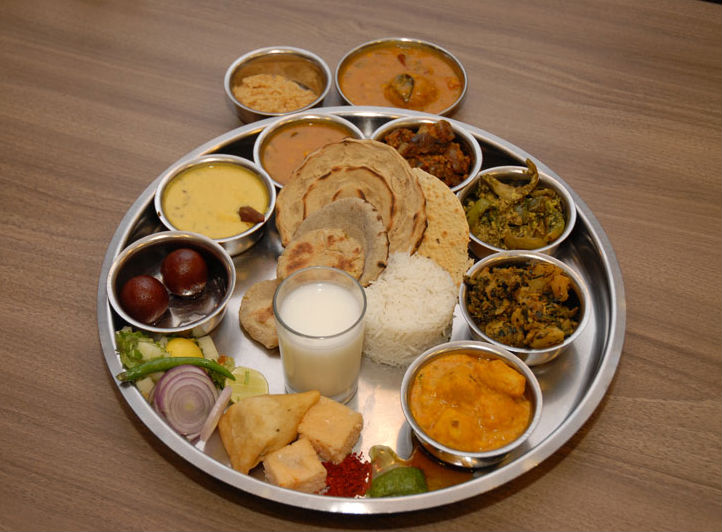

Services:
Free Food service:
Maa Devi Annapurna Bhojanalay was organized by Shri Dahyabhai Fulabhai Patel Trust, Gandevi in 2001 to provide free food to indoor patients at N.J. Damania Sarvajanik Hospital, Gandevi. In year 2014, Shimati Dayagauri Jamnadas Kapadia donated rupees 10 lakhs to Bhojanalay and new name was assigned as Smt. Dayagauri Jamnadas Kapadia Maa Annapurna Bhojanalay. She also donated semiautomatic cooking plant worth rupees seven lakhs in 2016.
Medical Store:
The Damania Medical Store is dedicated to providing quality pharmaceutical care. We are a family-owned private Pharmacy and proud to be associated with N.J. Damania Sarvajanic Hospital, Gandevi. Our main focus is on personal service to our patients, health education and related maters, communication and community involvement. We sell medicines at very reasonable rates.
Blood-Donation camp:
N.J.Damania Hospital often organise a blood donation camp to collect enough source of blood to save life and also encourage people to save someone's life by donating blood.We organise camp on mostly national holidays and on festivals so, more people can be part of it and blood bank can gather more amount of blood. They also have mobile van for this.
Eye Camp:
Damania hospital also organise free Eye checkup camp on every 2nd sunday of month. They held this camp in various urban vollages so more and more people can be part of it.They also spreadawareness and encourage people to donate their eyesafter the death.They also do operations for free.